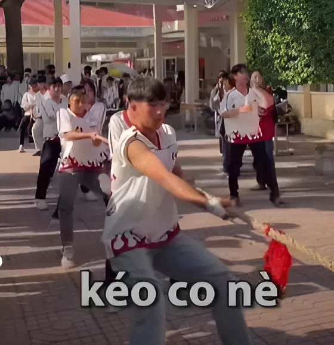
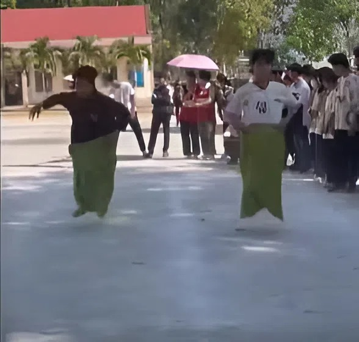

Hoạt động Trò chơi 26/3
Gắn kết – Vui tươi – Đậm chất tuổi trẻ
Niềm vui là điều quan trọng nhất
Mỗi khoảnh khắc đều đáng nhớ
Thêm hiểu – thêm thương
Bên cạnh các hoạt động thể thao và văn nghệ, những trò chơi tập thể trong ngày 26/3 đã mang đến không khí vui tươi, sôi động cho toàn trường. Các trò chơi như kéo co, nhảy bao bố, đổ nước vào chai đã thu hút đông đảo học sinh tham gia.


Tiếng cười giòn tan, những tràng cổ vũ nhiệt tình cùng tinh thần thi đấu hết mình đã tạo nên một bầu không khí đầy năng lượng và hào hứng. Mỗi trò chơi không chỉ đem lại niềm vui mà còn giúp rèn luyện sự nhanh nhẹn, khéo léo và tinh thần đồng đội.
Thông qua các hoạt động trò chơi, học sinh được gắn kết hơn với bạn bè, xây dựng tình đoàn kết và lưu giữ những kỷ niệm đẹp của tuổi học trò. Đây chính là phần không thể thiếu, góp phần làm nên một ngày 26/3 trọn vẹn và đáng nhớ.